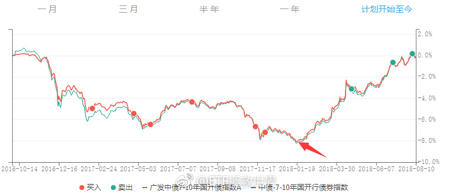

回复@shimeihaojie:我对这次500c首战告捷还是挺看好的。奶一口。//@shimeihaojie:下午500可能会翻红，要不要出500C呀。@ETF拯救世界:国开债这一轮总体来说还可以，没犯什么大错。不过，在箭头这个地方为什么没买呢。想不起来了。是不是在等4.5？下次得注意。 
回复@业余定投者:调整仓位到不慌为止。//@业余定投者:说实话我有点心慌慌@ETF拯救世界:所谓价值，所谓趋势，左侧右侧，其实就像当年华山派剑宗气宗之争。争什么呢，挣钱才是王道啊。价值就不会出问题吗？未来的公司，未来的行业，未来的世界，你能那么确定？一旦看错，几十年就浪费了。别说那些成功的人，那些没有成功的价投十倍于他们。趋势就不会出问题吗？明明已经巨便宜了还在杀跌，明明已经很贵了还在追涨，你不死谁死啊。再来个十几二十年的震荡市。开心了。指数二十年没变，你追涨杀跌赔了50%。我的意思，剑气合一，内外兼修。先立于不败，再求一点点进步。还怕不能成事吗？
所谓价值，所谓趋势，左侧右侧，其实就像当年华山派剑宗气宗之争。争什么呢，挣钱才是王道啊。价值就不会出问题吗？未来的公司，未来的行业，未来的世界，你能那么确定？一旦看错，几十年就浪费了。别说那些成功的人，那些没有成功的价投十倍于他们。趋势就不会出问题吗？明明已经巨便宜了还在杀跌，明明已经很贵了还在追涨，你不死谁死啊。再来个十几二十年的震荡市。开心了。指数二十年没变，你追涨杀跌赔了50%。我的意思，剑气合一，内外兼修。先立于不败，再求一点点进步。还怕不能成事吗？